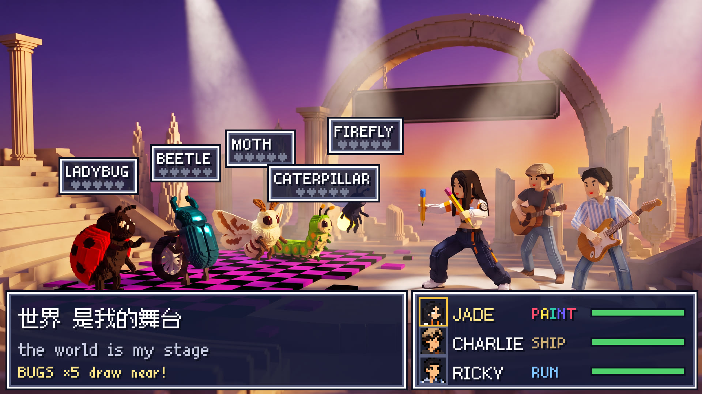
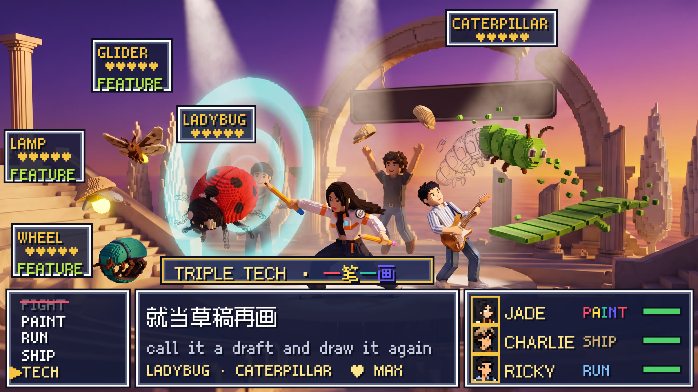
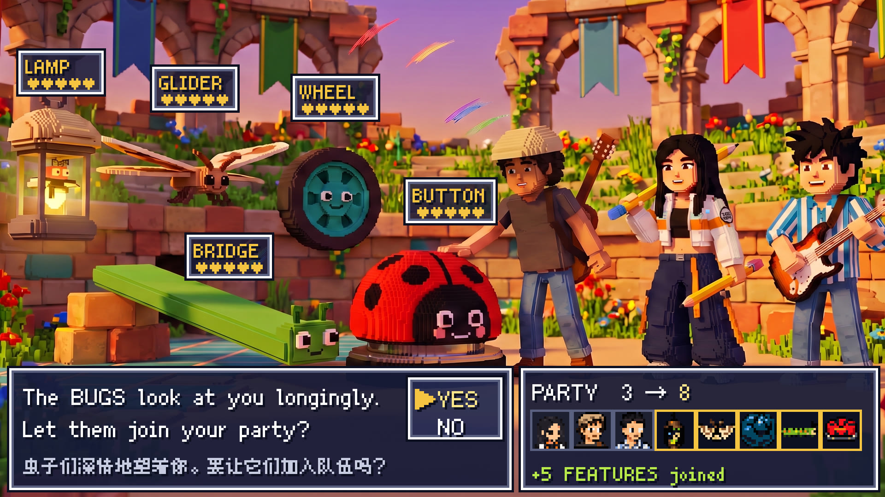

Half one played like The Lost Vikings: three heroes, one verb each, and no room you could clear alone. In half two, reality levels up and so does the genre. The 3D world plays as a JRPG with no FIGHT command. You win a battle by fixing the enemy until it wants to join you.
It rubs out graphite, the structure. It can't touch color: that rule comes from Act I and still holds. It joins at the end as UNDO.
Anything colored that a bug crawls over glitches into the purple-and-black checkerboard from the Act I void. Each one joins as the feature it was hiding.
The pixel UI from half one comes back only for battles, so the old 2D game cuts into the 3D world. The rap types into the message window like JRPG battle text, and that window is the subtitle. Enemies have a ♥ meter instead of HP. Every turn takes half a bar: the bug shows its problem, then two heroes answer with a combo. The boss needs all three, and their three-hero combo fixes two bugs at once.



| Bug | Software bug | Its turn (the problem) | Fixed by | Becomes | Used later |
|---|---|---|---|---|---|
| Firefly | flaky test | blinks off the beat; lights it lands on flicker | RUN + SHIP: three chords set its tempo, and the hat becomes its lampshade | lamp | lights the floating shards at dusk |
| Moth | crash loop | dives into the spotlights and knocks them out | PAINT + RUN: colored wings, then Ricky's updraft | glider | flies Jade up to the Eraser's face |
| Beetle | infinite loop | rolls in circles, grinding glitch rings | PAINT + SHIP: a drawn axle, and the boomerang pulls the loop straight (break;) | wheel | gives slow Ricky a ride |
| Caterpillar | stack overflow | grows segments until it spills off the stage | all three, triple tech 一笔一画: Jade drafts them, Ricky runs the drafts, Charlie ships them | bridge | spans gaps in the erased world |
| Ladybug ★ | the original bug | flashes its red error spots; sends a glitch wave | SHIP button | answers YES; launches the party at 出发 |
The BUGS look at you longingly.
Let them join your party?
> an eraser. The glider flies her up, she colors it pink, Ricky's chord makes it smile, and Charlie gives it a hat. The Eraser joins as UNDO.REALITY LV2 → LV3, fills. The features click together into a party cart.The concept keyframes' heroes are about 64–70 voxels tall, with heads about a fifth of their height. Ours are carved from pixel art, which makes them chibi and turns the painted shading into voxel noise. The plan is to rebuild them as 3D models in code at about 96 voxels tall. The bugs and their features get built as matched pairs, so a conversion flies each voxel of the bug into its place in the feature.
> let's dance, and Charlie answers YES with the ladybug button.> an eraser is the answer to "what is it that I need?"The mocks are image-model concept frames that show the target look. They aren't engine renders. Song times are in seconds. Full beat sheet: docs/game_design_acts3-5.md in the vibesong project.